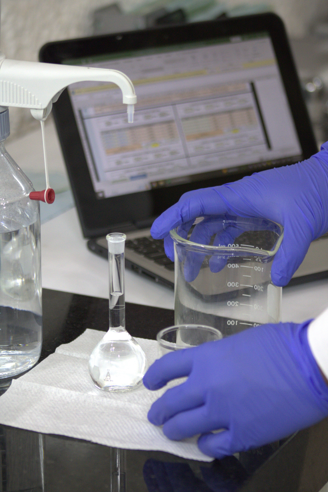

Programas reconhecidos nacionalmente para validação, comparação e melhoria contínua de laboratórios de análises químicas, ambientais e microbiológicas.
Cada programa segue protocolos próprios, com homogeneidade, estabilidade e tratamento estatístico conforme ABNT NBR ISO 13528.

A Sabesp, por meio do seu Centro de Tecnologia, opera há mais de duas décadas um dos mais robustos programas de ensaios de proficiência do Brasil, contribuindo para a qualidade analítica de laboratórios públicos e privados.
As vagas para os ensaios de 2026 estão abertas. Receba o cronograma completo e instruções de participação.